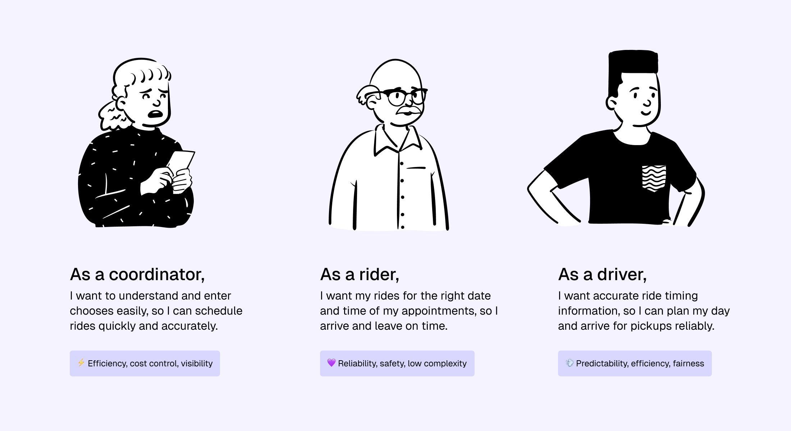

This summer, I worked with Lyft’s Media and Business team on Concierge, Lyft’s solution for organizations like healthcare providers and car dealerships to arrange Lyft rides on behalf of others. Over 12 weeks, I designed, tested, and shipped improvements to a key user flow on the web platform.
Lyft Concierge riders are often older adults, patients, or individuals without access to smartphones, which means they rely on coordinators to book rides on their behalf for appointments. Unlike typical Lyft rides, these trips are often scheduled in advance, tied to strict appointment windows, and may involve riders with limited mobility, health concerns, or heightened anxiety around travel.
My work centered on how coordinators choose timing, understand and select ride options, and specify pickup locations, ensuring these high-impact moments in the flow were clear, flexible, and error-resistant. Specifically, I:
I delivered key product updates that power every booking on Concierge Web to ensure users are met with a more streamlined and satisfactory experience.
I partnered with PM, UXR, engineering, and content to bring in feedback and align everyone involved, from problem discovery to implementation.
I quickly onboarded and immersed into the complexity of Lyft Concierge, to design with empathy for users and product thinking for the business.
Design happens in ambiguity, and often, it's about making a thoughtful decision with a clear understanding and design rationale. Time is limited and precious!
Also a business decision, design is often shaped by priorities and trade-offs. As I grow, I'm excited to work on this area more so I can better balance my craft with impact.